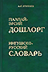
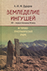
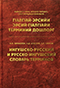
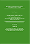
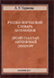
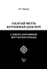
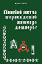
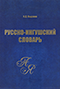

Данный проект имеет целью составление единого корпуса словарей ингушского языка, на основе вычитанных текстов, с возможностями поиска и фильтрации, что может пригодиться для различных исследований и стать базой для компьютерных программ, работающих с ингушской морфологией.
Материалы добавляемых изданий отображаются в режиме таблицы, разделенной на 5 колонок/столбцов.
В первом столбце таблицы, для идентификации источника, каждое слово сопровождается библиографической сигнатурой в виде краткого принятого здесь условного обозначения (кода), цвет фона которого маркируется цветом обложки книжного издания. Ниже приведён библиографический список сокращенных названий добавленных в базу словарей, где цифры в составе кода обозначают нумерацию или год издания, буквы — автора или название:
| КОД | ОБЛОЖКА | БИБЛИОГРАФИЧЕСКАЯ ССЫЛКА | |
| Вошли в | |||
|  | * В базе формы эргативного падежа выделены фигурными скобками | ||
|  | |||
|  | |||
|  | |||
| сравнение |  | ||
|  | |||
|  | |||
|  | |||
| |||
Вторая и четвёртая колонки таблицы содержат заголовочные слова и переводные эквиваленты (соответствия/значения). Независимо от позиции входного или исходного языка в левой или правой части оригинального издания — здесь вторая колонка отведена для слов ингушского языка, четвёртая — для слов противоположной части (информация о представленных в колонке языках указывается в заголовке колонки). Также в базу не были включены дублирующие варианты переводов, излишние в табличном режиме, при имеющихся возможностях отбора, сортировки, смены местами колонок и т. п. Например, для Словаря терминов исключена русско-ингушская словарная часть, для Словаря компьютерных терминов — английско-ингушско-русская и рус.-инг.-англ. части.
Третья и пятая колонки отведены для сокращенных лексикографических помет и тематического распределения слов согласно оригинальным текстам тематических или предметно-ориентированных словарей. Для размеченных этими пометами записей таблицы — по кнопке значка фильтра «» этих двух колонок — при необходимости отбираются слова, принадлежащие к специальной сфере употребления. Напр.: анат., «Компьютерные термины» и др. Расшифровать принятые сокращения можно, обратившись к Сводному списку сокращений.
Каждая из колонок поддерживает сортировку по клику или пункту контекстного меню в её заголовке, а также изменение ширины столбцов и их порядка, путём перетаскивания или скрытия. Сразу после запуска или по результатам поисков — в заголовке второй колонки отображается общее количество записей в таблице.
|| — две прямые линии отделяют неизменяемую часть слова от изменяемой.// — две или одна наклонные черты разделяют вариативные элементы.Звёздочкой (*) обозначены слова, не получившие распространения в ингушском языке ( П )ТИ 09
Поиск не чувствителен к регистру букв, к знакам ударения и к имеющейся в таблице диакритике. Набор буквы «е» вместо «ё» не влияет на результат.
Вместо используемой в базе ингушской буквы «Ӏ» (Ӏa), во всех поисковых полях для удобства допустимо набирать/вставлять из буфера обмена — единицу, латинскую строчную букву «l», латинскую прописную «I», или греческую букву «Ι» — которые в буквенных сочетаниях будут преобразованы согласно ингушской графике.
Для изданий, использующих две прямые линии («||») для отделения изменяемой части слова — возможен поиск по формам множественного числа, произведённых от неизменяемой части. Так, при поиске слов «бордз» или «бертий», будет найдено соответствие
Поиск может производиться по каждой из колонок — по полям поисковых фильтров в их заголовках, либо сразу по всей таблице, через форму поиска, закреплённую справа внизу — отображая результаты, которые удовлетворяют заданным условиям в каждом из заполненных полей. В сочетании с фильтрацией (значки «» в заголовках трёх столбцов), отображающей разницу всего содержимого колонки без дублей, это позволит максимально «сузить» пространство поиска, устанавливая фильтры как путём выбора данных, так и путем ввода значений фильтров. Например, в первой колонке («Источники») можно в фильтре отобрать два словаря из списка, поставив галки напротив соответствующих условий фильтрации, затем выбрать нужные пункты для фильтра из колонок 3-й и 5-й (если таковых несколько в каждом — либо вписав в поисковое поле фильтра запрос для одного вхождения) — и далее уточнять результаты через поисковые строки.
При новом поиске следует учитывать состояние какого-либо из фильтров или поисков, так как изменения их установок будут воздействовать на следующие поисковые запросы. В этом случае значок фильтра подсвечивается красным, а поисковые поля содержат предыдущий поисковый запрос. Чтобы отменить фильтрацию, нужно снять выбранные в фильтре пункты двойным щелчком по «Выбрать все» и нажатием ОК, а для текстовых запросов — сбросить их через выпадающие пункты «Сбросить» слева от каждого поискового поля с фильтром.
Прикрепленный внизу «Глобальный поиск» работает по принципу простого поиска соответствий по всей таблице и в любой позиции текста. Поиск в начальной позиции слов, или поиск целых слов (опция включается по кнопке слева от фильтра из выпадающего списка) — возможен в закрепленных в заголовках колонок поисковых фильтрах, с использованием подстановочных знаков и регулярных выражений.
Подстановочные знаки — это специальные символы, которые могут заменять неизвестные символы в текстовом значении, позволяя, например, найти любое слово с неизвестным правописанием по опорным буквам. В поиске по таблице используются следующие подстановочные знаки.
П. знак Описание Пример
@Соответствует отдельной букве в слове.
По запросу
к@рбудут найдены слова «кор», «кер», «кир» и «кур».* (При поиске коротких слов, для исключения лишних результатов, опция «Целые слова» должна быть включена, см. скрин)
,Символ запятой соответствует нулю или более неизвестных букв в слове.
По запросу
ц,г,лбудут найдены слова «цхьоагӀал», «цхьогал», «цхьуогал», «цогал».
,,Две запятые соответствуют любому количеству произвольных символов.
По запросу
ц,,албудет найдено вхождение «цхьоалагӀа ноахал».
<Открывающая угловая скобка соответствует гласной букве ингушского алфавита (с учётом дифтонгов и буквосочетаний — «двойных букв»):
а|аь|е|ё|и|о|оа|у|ы|э|ю|я|яьПо запросу
гӀ<мбудут найдены слова «гӀаьм», «гӀам» и т. д.
>Закрывающая угловая скобка соответствует согласной букве ингушского алфавита (с учётом буквосочетаний — «двойных букв»):
б|в|г|гӀ|д|ж|з|к|кх|къ|кӀ|л|м|н|п|пӀ|р|с|т|тӀ|ф|х|хь|хӀ|ц|цӀ|ч|чӀ|ш|щ|ӀПо запросу
>амбудут найдены слова «гӀам», «гам» и т. д.По запросу
>+ыбудут найдены односложные слова, оканчивающиеся на букву «ы».
0Цифра с двумя пробелами после неё — соответствует количеству слогов в искомом слове, с учётом дифтонгов и буквосочетаний ингушского алфавита.
По запросу
6 ротобразятся шестисложные слова, оканчивающиеся на букву «р».По запросу
4 заотобразятся пятисложные слова, с окончанием «за» (4 слога + окончание с гласной).* (см. опцию «Целые слова»)
Регулярные выражения (regular expressions, сокращенно regexp, regex) — это один из способов поиска соответствий в строках по заданному шаблону.
Р. симв. Описание Пример
\dСоответствует любому цифровому символу.
По запросу
\d+будут найдены все строки с цифрами.
[ ]Соответствует символам в скобках.
По запросу
в[ыу]будут найдены слова, в которых после буквы «в» следуют буквы «ы» или «у».
[0234]— найти все строки с перечисленными цифрами.
^Исключает символы в скобках.
По запросу
в[^ыу]будут найдены слова, в которых после буквы «в» следует любой символ, кроме «ы» или «у».
-Соответствует диапазону символов.
[2-4]— найти все строки с цифрами в диапазоне.
\bСоответствует границе слова.
аз\b— найти целые слова «аз».
(?:)Группировка без обратной связи.
^(?:(?!имя).)*$— исключить строки, содержащие слово «имя».При поиске с участием спецсимволов, когда например в полях с поддержкой RegEx, нужно найти один из перечисленных символов — «
. ^ $ * + ? { } [ ] \ | ( )» — их необходимо экранировать, путём добавления обратного слеша («\») перед спецсимволом.
Список имеющихся в эл. виде словарей, запланированных к добавлению в базу:
1925 — Мальсагов З.К. Ингушская грамматика (со сборником ингушских слов) 1929 — Мальсагов И. — Русско-ингушский словарь 1941 — Муталиев Х.-Б. — Русско-ингушский словарь (для нач. шк.) 1980 — Оздоев И.А. — Русско-ингушский словарь 2009 — Тариева Л.У. и др. — Ингушско-русский словарь
Если будут желающие поучаствовать в пополнении базы, можно попробовать совместно произвести верификацию распознанных пакетов определенного издания по 20—30 страниц — уточнить форматирование, исправить неточности и тп. Готовые принять участие в такой работе, могут отписаться в комментариях внизу страницы, как и в случае обнаружения неточностей в материалах базы.
Для работы в оффлайн-режиме, возможна загрузка в память смартфона, планшета или компьютера. На устройствах с небольшими экранами — из контекстного меню в заголовке таблицы, или по прикреплённой справа внизу кнопке — можно скрывать мешающие просмотру столбцы. В случае обновлений, информацию о них планируется размещать в Instagram.
ingcorpora.zip (5,10 МБ, версия от 27.08.2022).
DD